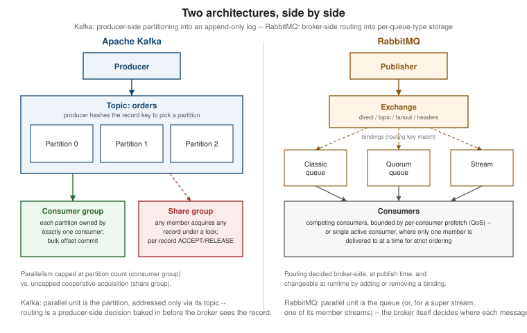

Kafka vs. RabbitMQ
|
This content was generated with the assistance of AI and should be verified against the official documentation before being relied on in production. |
Every other page in this section treats Kafka and RabbitMQ on their own terms. This one puts them side by side, dimension by dimension, for the question a team actually has to answer: which one fits a given workload, or whether both belong in the same system doing different jobs. The richest single source for this comparison is RabbitMQ’s own Compare with Kafka page — but it is written and maintained by the RabbitMQ team, for a RabbitMQ audience, and it reads that way in places: its framing of what counts as an advantage, and a few of its claims about Kafka’s behavior, are not neutral. Every Kafka-side claim sourced from it in what follows has been checked against Kafka’s own Design documentation and Operations documentation rather than reproduced as written, and the comparison notes it explicitly wherever RabbitMQ’s framing and Kafka’s own documentation would lead a reader to different conclusions.
Design origins and convergence
For most of both projects' histories, the "Kafka for streaming, RabbitMQ for queueing" heuristic was a fair summary of what each broker was actually built to do. Kafka’s data model — an append-only, partitioned, offset-addressed log, covered on Kafka Architecture — was designed from the outset around replay and high-throughput sequential I/O, not per-message queue semantics: a consumer group’s exclusive partition ownership gives ordering and parallelism, but nothing at the record level resembling a queue’s per-message acknowledge/requeue/reject vocabulary. RabbitMQ’s data model — exchanges, bindings, and queues, covered on RabbitMQ Architecture and the AMQP Model — was built the other way around: individually addressable messages routed by a broker that fully parses each one, with no notion of a durable, replayable, offset-addressed log until much later.
That heuristic is now dated, not wrong so much as incomplete on both sides. RabbitMQ introduced streams in version 3.9 (2021) — an append-only, replicated log with its own offset-based consumption model, covered on RabbitMQ Queue Types — specifically to compete in the replay-and-high-throughput space Kafka had owned. Kafka, in the other direction, added share groups (KIP-932), generally available since Kafka 4.2, covered in full on Kafka Share Groups: record-level cooperative consumption with per-record acquisition locks and ACCEPT/RELEASE/REJECT/RENEW outcomes, deliberately built to serve the queue-style task-distribution workloads consumer groups handle poorly. Each project now offers a working answer to the other’s original problem, which is exactly why a dimension-by-dimension comparison is more useful today than the old one-line heuristic — and exactly why RabbitMQ’s own comparison page spends as much space as it does on share groups' current limitations rather than treating the "Kafka for streaming, RabbitMQ for queueing" split as settled.
Data model
| Kafka | RabbitMQ | |
|---|---|---|
Core unit |
A topic, split into an immutable, append-only, offset-addressed partition per parallel unit. See Kafka Architecture. |
A queue (classic, quorum, or stream — see RabbitMQ Queue Types), reached by publishing to an exchange and matching a binding. Routing is a separate concept from storage. |
Addressability of the parallel unit |
A partition is a subordinate of its topic: it has an index, not an independent name, and is not addressed on its own outside the topic. |
A RabbitMQ stream is an individually named, independently addressable object in its own right — and a super stream (a logical stream partitioned across several individual, replicated streams; see RabbitMQ Queue Types) is the closest RabbitMQ concept to a Kafka topic, with each of its member streams playing the role a Kafka partition plays. |
Message parsing by the broker |
Kafka brokers do not parse record contents for routing; a record’s key only ever participates in the producer-side partitioning decision described below. |
The broker parses every message’s envelope (headers, properties, routing key) to make a routing decision, and can act on individual messages — delaying, rescheduling, rerouting, or dropping one independently of its neighbors. |
Routing
Where a message ends up is decided in fundamentally different places on each broker. A Kafka producer computes the destination partition itself, client-side, before the record ever reaches a broker: the default partitioner hashes the record key (or, for a null key, spreads records round-robin in a sticky batch-friendly pattern), covered on Kafka Producers. A consumer then subscribes to whole topics; there is no broker-side mechanism to filter which records within a partition a given consumer receives — every subscriber gets everything and discards what it does not want, client-side.
RabbitMQ inverts this: a publisher addresses an exchange, and the broker decides which queue(s), if any, the message is routed to, based on the exchange type and its bindings — direct, topic (with wildcard routing keys), fanout, headers, or consistent-hash, covered on RabbitMQ Routing Patterns. RabbitMQ streams add a second, complementary mechanism on top of routing: broker-side filtering via Bloom filters and AMQP/SQL filter expressions, so a consumer can skip chunks it does not need without decoding them, covered on RabbitMQ AMQP 1.0. The practical consequence is that changing where messages go in RabbitMQ is a runtime binding change; doing the equivalent in Kafka means changing the producer’s partitioning logic or adding a new topic.
Consumer models
| Model | Summary |
|---|---|
Kafka consumer group |
Each partition is owned by exactly one group member at a time; parallelism is capped at the partition count; acknowledgement is bulk, per-partition offset commits. See Kafka Consumers. |
Kafka share group (KIP-932) |
Record-level cooperative acquisition under a time-limited lock; any member may acquire a record from any
partition; acknowledgement is per record ( |
RabbitMQ competing consumers |
Any number of consumers on the same queue compete for its messages; per-consumer prefetch (QoS) bounds how
many unacknowledged deliveries a given consumer can hold at once, and per-message |
RabbitMQ single active consumer |
Within a named group of consumers on one queue, exactly one is actively delivered to at a time; if it disconnects, RabbitMQ fails over to the next — ordering across the whole queue is preserved at the cost of parallelism, the opposite trade-off from competing consumers. See RabbitMQ Consuming. |
Kafka share groups and RabbitMQ competing consumers converge on the same broad goal — many workers cooperating
on one backlog without one bad message stalling its neighbors — but the details differ, and RabbitMQ’s own
comparison page argues share groups do not fully eliminate head-of-line blocking. That framing is worth
unpacking rather than accepting or dismissing outright: Kafka
Share Groups documents that the in-flight window a share-partition can hold open (bounded by
group.share.partition.max.record.locks) is finite, so once that many records are acquired and unsettled,
further delivery from that partition stalls until some are resolved. A single unresolved record does not block
records ahead of it the way a consumer group’s unread offset would — that part of RabbitMQ’s framing overstates
it — but an application that lets its in-flight window fill up (rather than one merely-slow record) can still
stall a share-partition, which is the more accurate version of the same concern.
Delivery guarantees, durability, and ordering
Both brokers offer the same three delivery semantics — at-most-once, at-least-once, and effectively-once — and
the mechanics of each (producer retry behavior, consumer acknowledgement timing, idempotent producers and
consumers) are identical in shape across the two brokers; rather than repeat that material, see
Delivery Guarantees for the full treatment. The one dimension
worth calling out here is what an acknowledgement is actually backed by, because the two brokers default to
different trade-offs: Kafka’s acks=all waits for replication across the in-sync replica set but does not, by
default, fsync to disk before acknowledging — durability rests on independent replicas surviving, not on any
single replica’s disk write landing before the ack. RabbitMQ’s quorum-queue publisher confirms wait for a Raft
majority to both replicate and fsync before confirming, at a lower per-write cost than that sounds thanks to
the underlying Ra library’s multi-raft design, which amortizes one fsync across every quorum queue sharing that
node’s write-ahead log rather than paying one fsync per queue. Neither approach is strictly better — Kafka’s is
cheaper per write and assumes replicas fail independently (separate power/failure domains); RabbitMQ’s survives
a correlated, simultaneous loss of every replica’s memory (e.g. a whole rack losing power at once) at the cost of
the fsync. Both brokers guarantee ordering only within a single parallel unit — a partition for Kafka, a queue
for RabbitMQ (or, for a super stream, within one of its member streams) — never across the whole topic or
exchange, and both support full replay from an application-chosen position: a Kafka consumer via
seek()/auto.offset.reset and a RabbitMQ stream consumer via an explicit OffsetSpecification. A RabbitMQ
classic or quorum queue, by contrast, does not support replay at all — once a message is acknowledged it is
gone, which is the queueing half of RabbitMQ’s data model working as designed, not a limitation of the
comparison.
Retention: compaction and tiered storage
Kafka retains data by age or size (time- or size-based retention) or, with cleanup.policy=compact, keeps only
the most recent value per key indefinitely — log compaction, the mechanism behind Kafka Streams' changelog
topics and any topic used as a durable, replayable changelog for a keyed entity. See
Kafka Architecture for the full retention and compaction model,
and its tiered storage section for offloading older log segments to object storage so retention is no longer
bounded by broker-local disk. RabbitMQ streams retain by size or time limits in essentially the same way Kafka
topics do, and a super stream’s per-key access pattern can approximate some compaction-like use cases at the
application level, but RabbitMQ has no broker-native equivalent of log compaction itself, and open-source
RabbitMQ has no built-in tiered-storage mechanism comparable to Kafka’s — an application that needs either
reaches for Kafka.
Per-message features
This is the dimension where the two brokers diverge most sharply, because it follows directly from the data model split in the first section: RabbitMQ’s broker parses and can act on each message individually, so it offers a set of per-message controls that Kafka — whose broker only ever appends bytes to a partition and never inspects them — has no native equivalent of at all:
| Feature | RabbitMQ | Kafka |
|---|---|---|
Per-message TTL |
A message can carry its own expiration, independent of the queue’s own TTL policy. See RabbitMQ Reliability, Dead-Lettering and TTL. |
None natively — only whole-topic retention. |
Priority |
Up to the configured number of distinct priority levels; higher-priority messages can be delivered ahead of a backlog. See RabbitMQ Reliability, Dead-Lettering and TTL. |
None — a partition is strictly FIFO by offset; there is no broker concept of message priority. |
Delayed / scheduled delivery |
A message can be held and made visible only after a delay, without a separate scheduler service. See RabbitMQ Reliability, Dead-Lettering and TTL. |
None natively — delayed delivery has to be built at the application layer (e.g. a delay topic plus a scheduling process). |
Message deferral |
A message can be parked under a token and retrieved on demand later. |
None — no equivalent concept. |
Dead-letter routing |
Rejected, expired, or overflowing messages are automatically re-routed through a dead-letter exchange, with the same routing power as any other exchange. See RabbitMQ Reliability, Dead-Lettering and TTL. |
None as a broker feature. Kafka Streams offers an application-level dead-letter-queue handler (KIP-1034, covered on Kafka Streams), and share groups archive a record once its delivery-count limit is exceeded (Kafka Share Groups) — but neither is a broker-native routing mechanism the way a RabbitMQ dead-letter exchange is; an application that wants one still builds it itself, typically as a "retry topic" ladder it explicitly produces failed records onward to. |
None of this makes Kafka’s model deficient — a partitioned, replayable log was never meant to carry per-message routing metadata — but a team choosing between the two for a workload that leans on any of these controls (a job queue with priorities, a per-tenant TTL, a scheduled reminder) should treat this table as close to a hard constraint on Kafka’s side rather than a missing convenience it will grow later.
Protocols, multi-tenancy, and security
Wire protocol support is covered in full on Messaging Protocols; in short, RabbitMQ natively speaks AMQP 0-9-1, AMQP 1.0, MQTT, STOMP, and its own Stream protocol behind one broker, covered on RabbitMQ Operations, Monitoring and Security for the MQTT/STOMP/WebSocket plugins specifically, while Kafka speaks a single, proprietary binary protocol, with MQTT or AMQP interoperability only available through an external bridge or proxy, not the broker itself. Multi-tenancy and security follow the same broker-parses-everything-vs-not split seen throughout this page: RabbitMQ’s virtual hosts, covered on RabbitMQ Operations, Monitoring and Security, are real, broker-enforced tenant boundaries with their own permissions, topic authorization, and connection/queue limits, while Kafka’s multi-tenancy, covered on Kafka Security, is enforced by a naming convention (a tenant-prefixed topic name) plus prefixed ACLs and quotas — effective, and how most Kafka-based platforms actually isolate tenants, but a convention the cluster has to be configured to enforce rather than a first-class object of its own. Both brokers support TLS, mutual TLS, and OAuth 2.0/OIDC.
Operations, observability, and runtime
Day-to-day operations diverge in tooling more than in difficulty: RabbitMQ ships a management UI, HTTP API, and CLI toolbox out of the box, plus a native Prometheus metrics endpoint, covered on RabbitMQ Operations, Monitoring and Security; Kafka exposes metrics over JMX, which in most production setups means running a separate JMX-to- Prometheus exporter agent per broker, covered on Kafka Operations and Monitoring alongside its own CLI toolbox and quota system. Neither gap is a reason on its own to pick one broker over the other, but it is a real, recurring difference in how much scaffolding a team has to stand up before either broker’s operational picture is as immediately visible as the other’s.
The runtimes underneath are a genuinely different architectural choice, not just a packaging detail. Kafka runs on the JVM, inheriting a mature JIT compiler, profiling tooling, and library ecosystem, at the cost of garbage collection over a shared heap where a long pause can affect the whole broker process. RabbitMQ runs on Erlang’s BEAM VM, covered on RabbitMQ Architecture and the AMQP Model — a runtime built for the always-on, fault-isolated telephony switches Erlang originated at Ericsson to control. Every connection, channel, and queue is its own lightweight BEAM process with its own small heap and its own garbage collector; a malformed frame from one misbehaving client crashes and restarts that client’s process in microseconds without touching anyone else’s, and per-process GC means tail latency does not degrade broker-wide as overall memory grows the way a single large JVM heap’s GC pauses can. This is a place where RabbitMQ’s own comparison page’s enthusiasm is, on inspection, substantially justified rather than marketing — BEAM’s per-process isolation is a well-documented, long-standing property of the runtime, not a RabbitMQ-specific claim.
Throughput and the "one message at a time" myth
A persistent myth holds that Kafka is simply faster, full stop, and that RabbitMQ "can’t do high throughput."
Neither half survives contact with either broker’s own numbers, and both halves make the same underlying
mistake: treating throughput as a fixed property of the broker rather than a function of how the workload
batches. Kafka’s own Design documentation is explicit
that its efficiency comes from batching records client-side (the producer’s record accumulator, covered on
Kafka Producers) and reading them back with zero-copy sendfile()
transfers — a Kafka producer sending one record at a time with no batching is not fast, for exactly the same
reason an unbatched workload is not fast anywhere else. RabbitMQ’s classic and quorum queues report on the order
of 100,000 and 80,000 messages per second respectively in RabbitMQ’s own benchmarks (quorum queues lower because
each write is both replicated through Raft and fsynced, per the durability section above), while RabbitMQ
streams — which use the same batching and zero-copy techniques Kafka’s design document describes — report
throughput in the millions of messages per second with well-filled batches. The independent-ish
ggreen/rabbit-vs-kafka-experiments repository, which
RabbitMQ’s own comparison page cites as supporting evidence, runs head-to-head throughput and latency benchmarks
between RabbitMQ streams and Kafka and places the two in the same ballpark for streaming-style workloads rather
than showing a structural advantage for either — worth treating as a useful independent data point precisely
because it is not RabbitMQ’s own marketing copy, though it is still a single set of experiments on one machine
configuration rather than an authoritative benchmark. The honest version of the throughput story is: classic
RabbitMQ queues were never built to compete with Kafka’s log-structured design at extreme throughput, and never
claimed to; RabbitMQ streams were built specifically to close that gap and, on the evidence available, largely
have.
Ecosystem
Kafka’s stream-processing ecosystem is broader and more mature: Kafka Connect for source/sink integration without hand-written producer/consumer code, Kafka Streams for in-application joins, windowing, and stateful processing, and, beyond what these pages cover, wide adoption as the ingestion layer for Flink, Spark, and similar external stream-processing engines. RabbitMQ’s equivalent tools solve a narrower, different problem — moving messages between brokers or clusters rather than transforming them in flight: federation and shovel for linking independent clusters, and native MQTT support, covered on RabbitMQ Operations, Monitoring and Security, for terminating large numbers of IoT device connections in the same cluster that also serves AMQP traffic. A team building a stream-processing pipeline with joins, windowed aggregations, or a stateful changelog has a materially wider set of off-the-shelf tools on the Kafka side; a team that mainly needs to move messages between brokers, sites, or a large fleet of MQTT devices has an equally materially better story on RabbitMQ’s.
Choosing between them
| Workload shape | Leans toward | Why |
|---|---|---|
Task queues, RPC/request-reply, priority-ordered work, IoT/MQTT device fleets |
RabbitMQ |
Per-message TTL, priority, delayed delivery, and native dead-lettering have no Kafka equivalent (see the per-message features table above); native MQTT support avoids a separate broker for device connections. |
Long-retention history, keyed changelogs needing compaction, or heavy use of the stream-processing ecosystem (joins, windowing, Flink/ksqlDB-style pipelines) |
Kafka |
Log compaction and tiered storage have no RabbitMQ equivalent; Kafka Connect and Kafka Streams give a materially wider off-the-shelf ecosystem for this shape of workload. |
Replayable event streams, firehose-style high-volume ingestion, exactly-once read-process-write pipelines |
Either |
RabbitMQ streams and Kafka topics solve this with structurally similar techniques (batching, zero-copy reads,
offset-based replay); Kafka reaches exactly-once via transactional producers and |
None of these rows is a verdict — they are where each broker’s native strengths line up most cleanly with a workload’s actual requirements, not a claim that the other broker is incapable of the job. In practice, systems of any size frequently run both, for different jobs: RabbitMQ handling command and task dispatch between services — where its per-message controls, competing consumers, and low-latency request/reply fit well — and Kafka serving as the event backbone those same services publish domain events onto for anyone downstream to consume or replay. That split is not a compromise so much as using each broker for the workload its data model was actually built around, and it avoids the alternative of forcing either broker to cover the other’s strongest use case just to keep the topology to one piece of infrastructure.
